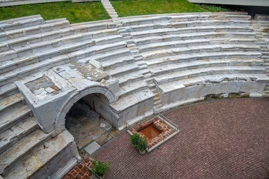
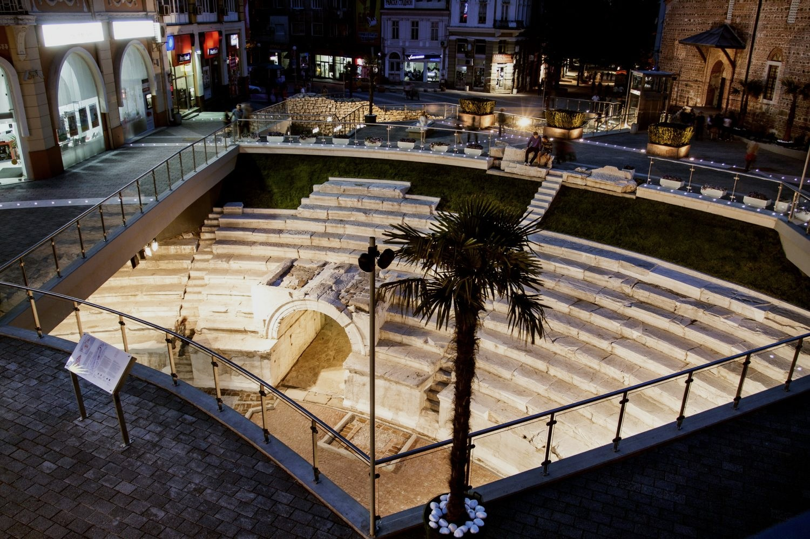
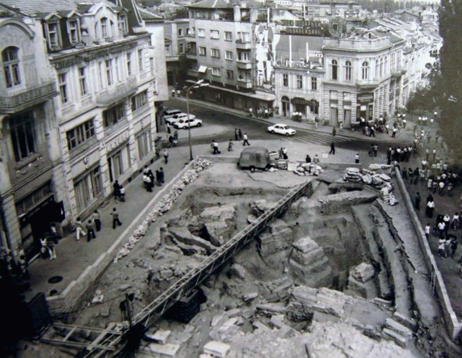

Стадионът на Филипопол е изграден в началото на ІІ в. при император Адриан. Разположен е в северния край на укрепения град, между двете крепостни стени, в естествената гънка между западния склон на Таксим тепе и източния склон на Сахат тепе. Съоръжението с приблизителни размери 240 м дължина и 50 м ширина е събирало около 30 000 зрители. Сега, след скорошната му реконструкция, той е възроден за нов живот и върху 14-те реда мраморни седалки можете да седнете и днес. В съвременния облик на града Стадионът на Филипопол се намира под главната пешеходна улица на Пловдив. Северната му част е достъпна за посетители. Може да се види също част от градската стена, построена през 172 г. при царуването на император Марк Аврелий, и основите на Римския акведукт на Филипопол.
В миналото тук са се провеждали спортни състезания, както и гладиаторски борби и борби с животни – прочутите Питийски, Александрийски и Кендрезийски игри. Намерени са останки от хидравличен часовник при централния му вход. Паметна плоча показва пренощуването тук на олимпийския огън на път от Атина за Москва през 1980 г. В момента Римският стадион се обновява по проекта „Античният стадион на Филипопол – опазване, рехабилитация и градско обновяване”. Реализира се от Областната администрация – Пловдив, с подкрепата на Финансовия механизъм на Европейското икономическо пространство. Районът около Римския стадион е изключително атрактивен за гостите на Пловдив. На малкия площад местни художници и хора на изкуството излагат своите произведения – скулптури, картини, бижута, сувенири и др.
“Едно от най-магичните места в Пловдив. Must see!” – споделят хора посетили забележителността
  